Yachiyo, Chiba: things to do, food and stays
Yachiyo · Chiba
Yachiyo
Highlighted on the Chiba map.

Stay
ベッセルイン八千代勝田台駅前

Besseruin Yachiyo Katsuta Dai Ekimae
アパホテル〈千葉八千代緑が丘〉
APA Hotel < Chiba Yachiyo Midorigaoka >
Hotel in Midorigaoka, Yachiyo with a sauna.
古民家宿るうふ 遊之家
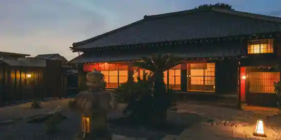
Ko Minka Yadoru Ufu Yu Yuki Ie
Inn in Shimoichiba, Yachiyo with a renovated traditional house.
ホテル ドエル
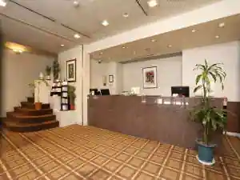
Hotel Doeru
Tabist ホテルダイアナ 八千代台
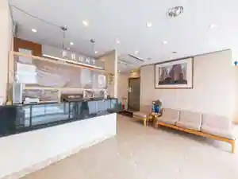
Tabist Hotel Daiana Yachiyodai
Hotel in Yachiyodaiminami, Yachiyo with Wi-Fi; 1-minute walk from Yachiyodai Station.
Dining
中華ソバ 篤々

Chuka Soba Atsushi (Kurikaesi)
貝殻亭
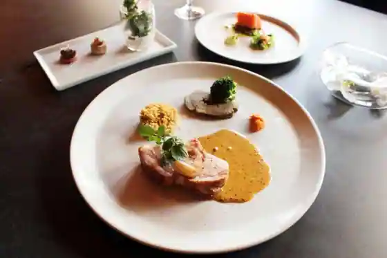
Kaigara Tei
麺や 福々三座
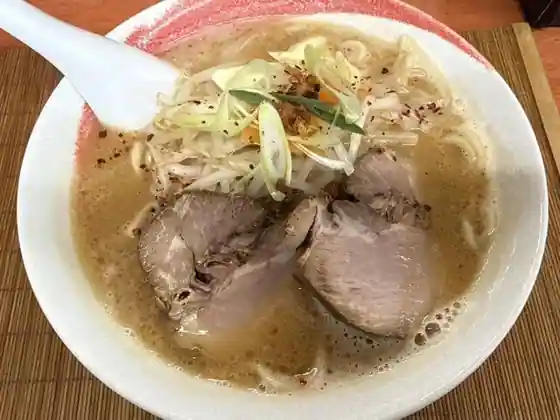
Men Ya Fukufuku San Za
（h）etta
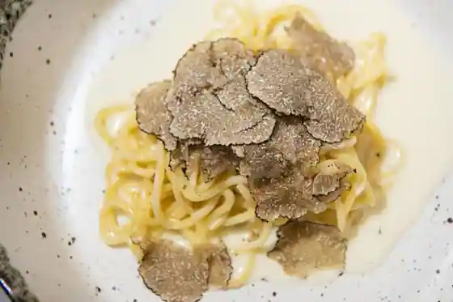
(h) etta
ときずし 山田
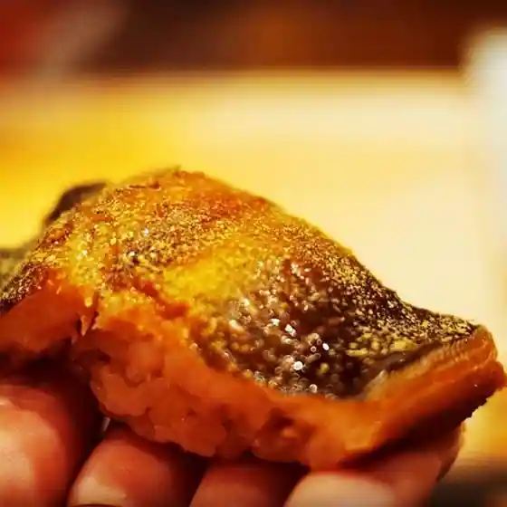
Tokizushi Yamada
南インド料理 葉菜
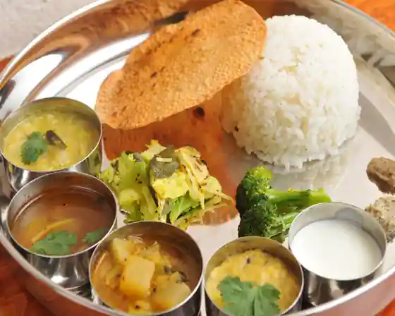
Minami Indo Ryori Yosai
横浜家系ラーメン 宮里家
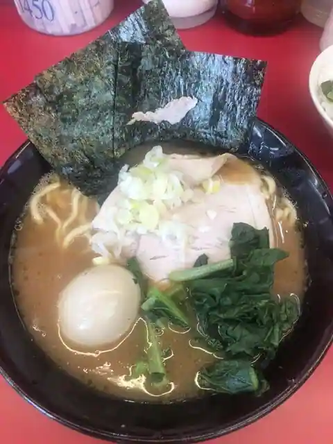
Yokohama Kakei Ramen Miyazato Ie
カウベル 八千代本店
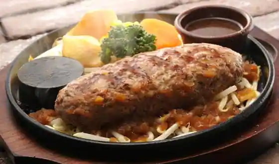
Kauberu Yachiyo Hon
煮干し中華蕎麦 彩葉に
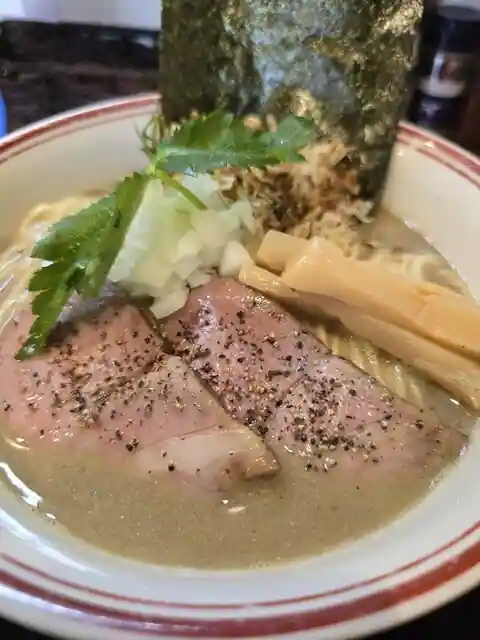
Niboshi Shi Chuka Soba Sai Ha Ni
中華そば 金ちゃん ビヨンド店
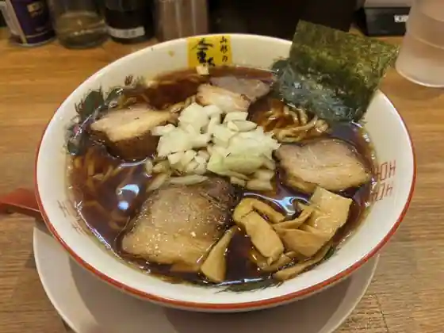
Chuka Soba Kin Chan Biyondo
家系ラーメン王道家直伝 との丸家 八千代店
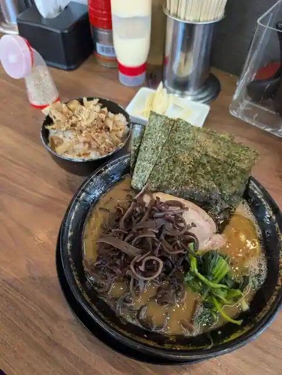
Kakei Ramen Odo Ie Jikiden Tono Maru Ie Yachiyo
ニューラーメンショップ大光
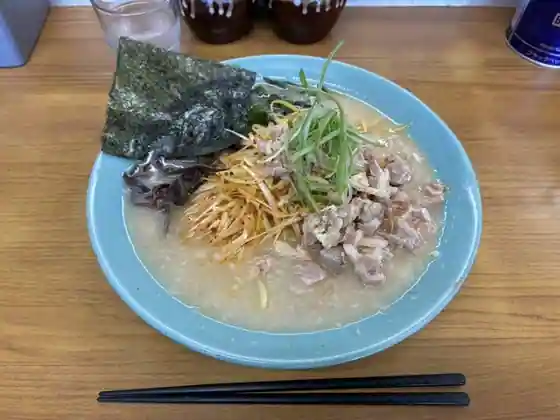
Nyu Ramen Shoppu Omitsu
やきとり房州
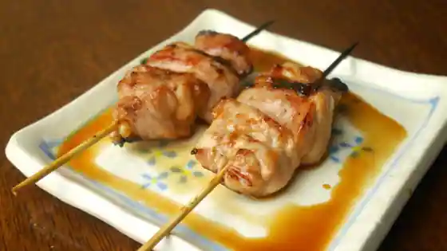
Yakitori Boshu
アンファン ルミエール 八千代台店
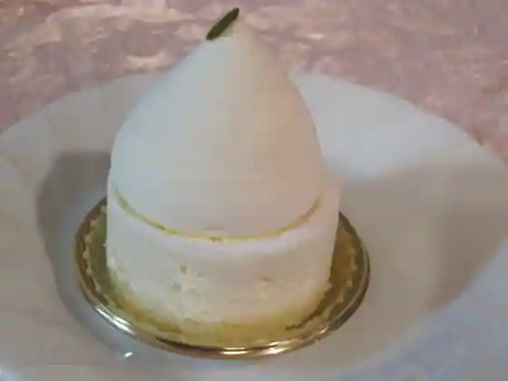
Anfan Rumieru Yachiyodai
ロス・アンジェルス
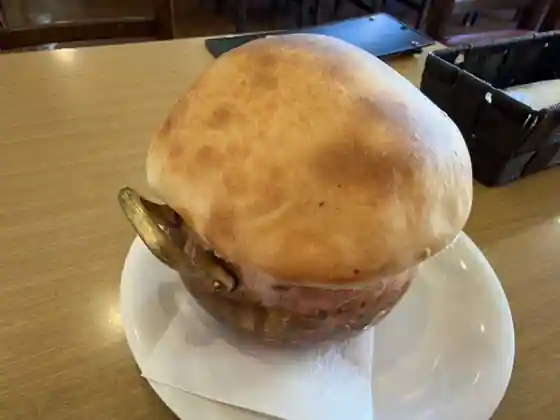
Rosu Anjierusu
北海とんこつ ら～めん純輝 八千代店
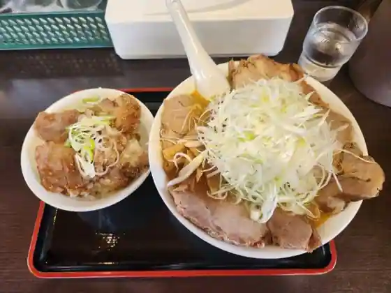
Hokkai Tonkotsu Ra ~ Men Jun Teru Yachiyo
カフェ ヒヨリ
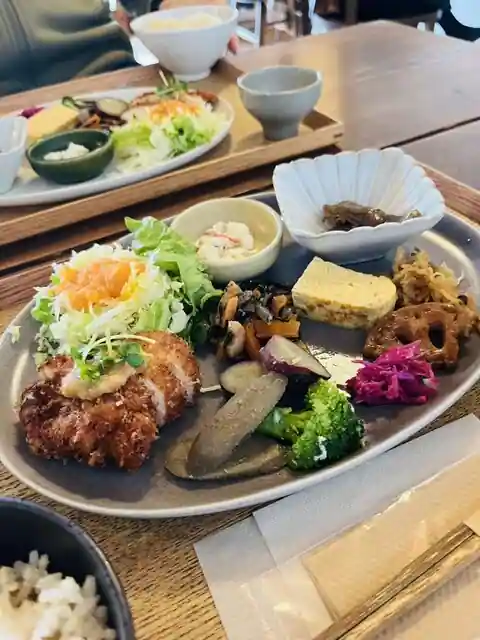
Cafe Hiyori
ヴァンローゼ
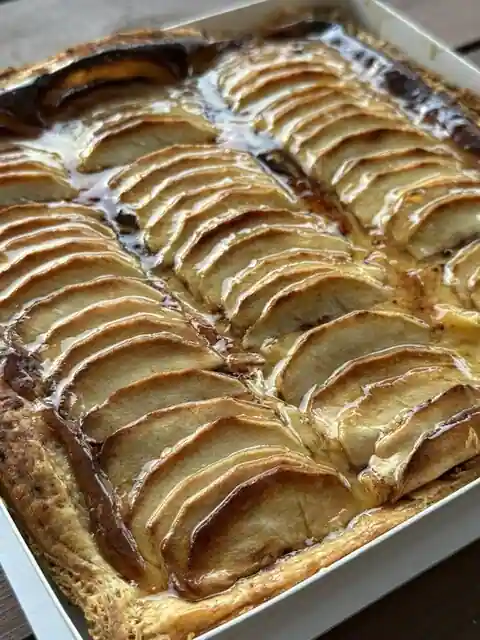
Vanroze
ヨシベー 八千代店
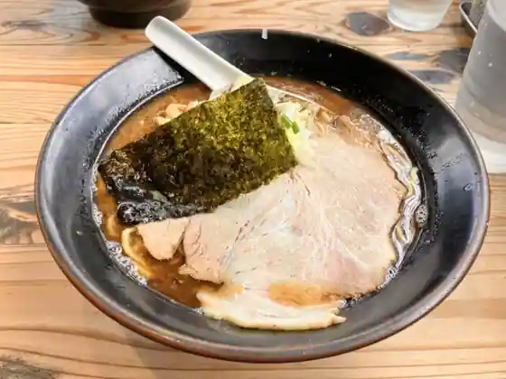
Yoshibe Yachiyo
プチシャンテリー 八千代道の駅店
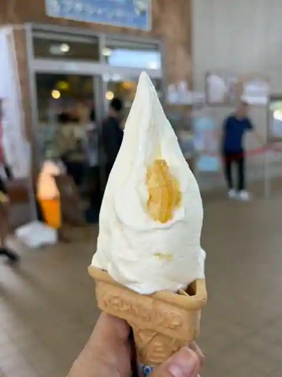
Puchishanteri Yachiyo Michi No Eki
パンケ
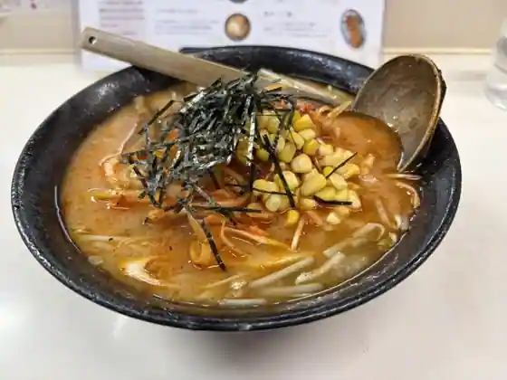
Bakery Ke
麺屋 一瀧
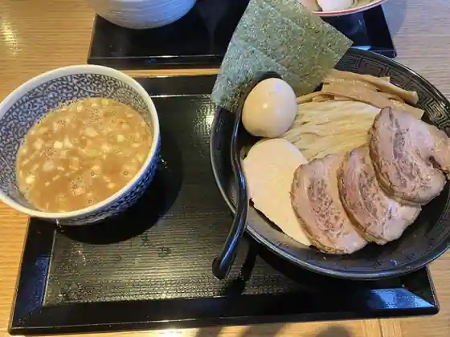
Men Ya Ichi Taki
房総豚骨ラーメン こてメン堂
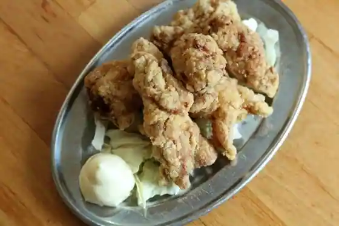
Boso Tonkotsu Ramen Kote Men Do
中華そば 金ちゃん 本店
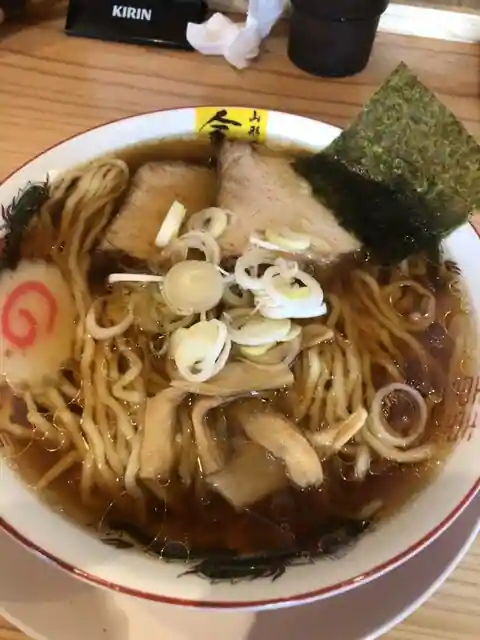
Chuka Soba Kin Chan Hon
Sights
Murakami Green Park
Shiro Usagi no Roiyaru Imbiteshon / Keisei Bara Sono

Yachiyo Ritsu Kyodo Museum

Kaya Taji Ku Park

Shogaku In (Bishamonten)

Myo Toku Tera (Daikoku Ten)
Toei Tera (Fukurokuju)
Famazumagatto (Yottaiyo)
Kannon Tera (Hotei Mikoto)
Myoko Tera (Kichijo Ten)
Chofuku Tera (Benzaiten)
Tei Fuku Tera (Ebisu)
Chofuku Tera (Jurojin)